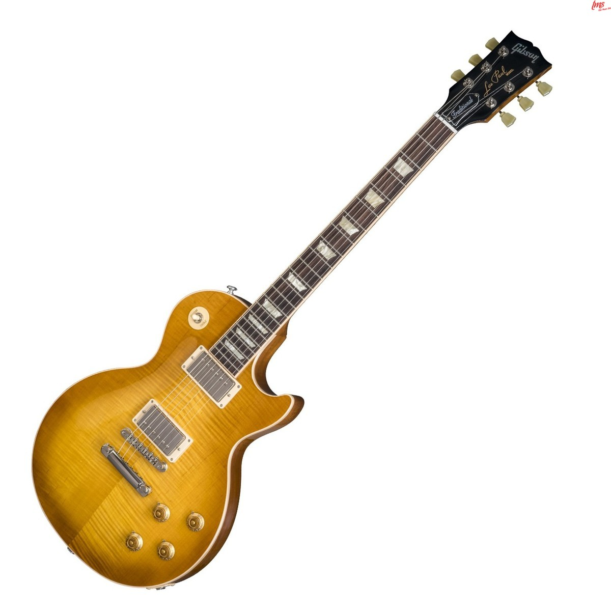
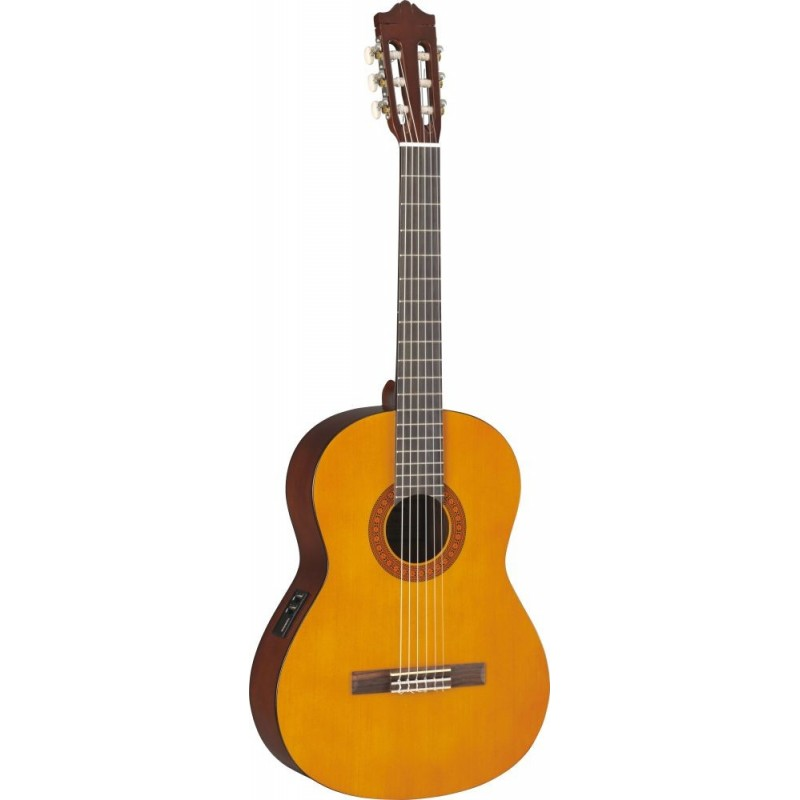
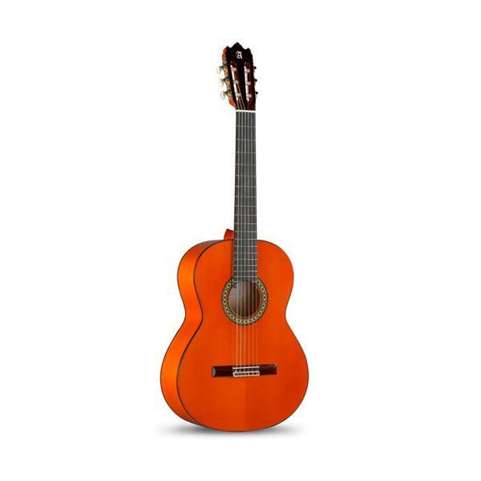
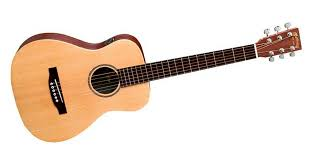
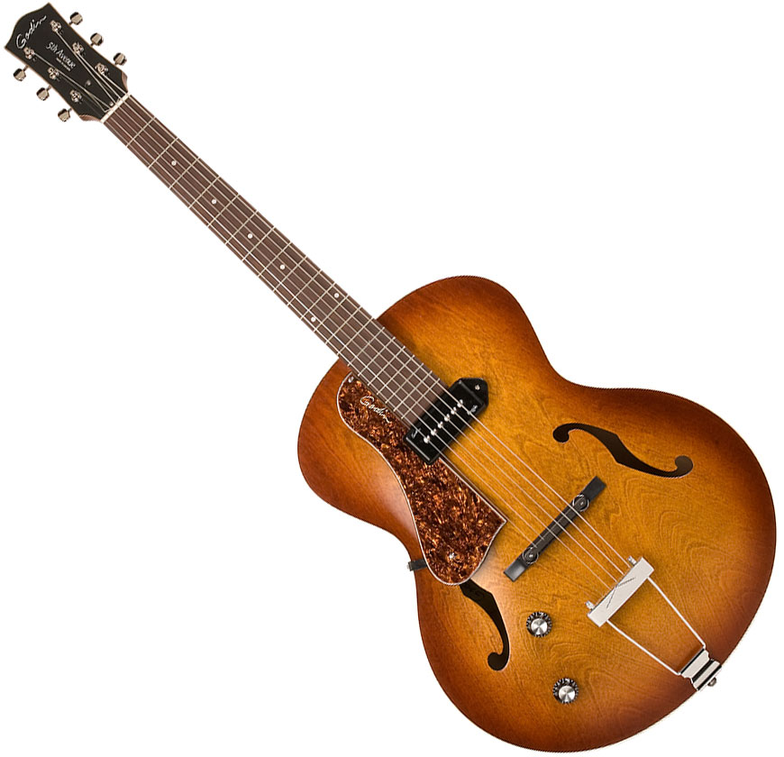
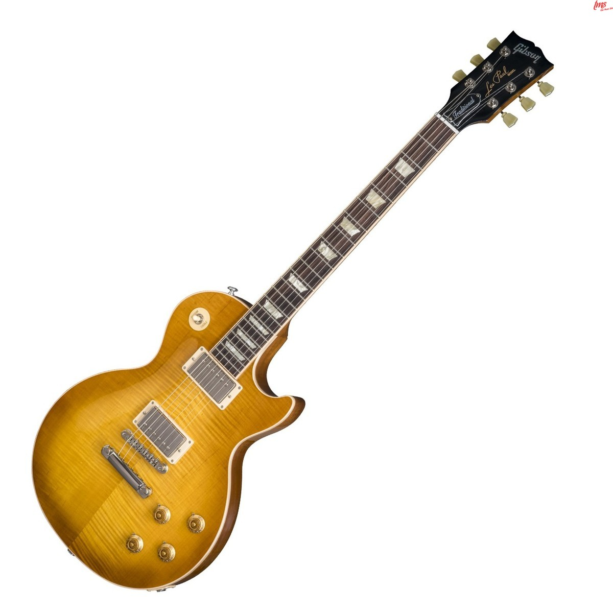

Guitarras Fender, como las Stratoscaster, las más versátiles y difundidas por su gran variedad sonora. Es perfecta para el rock duro.

Guitarras Gibson, como el modelo Les Paul, la más usada por los artistas de jazz y blues.
Aquí nos encontraremos con cuerdas de nylon o con cuerdas de acero. Las de nylon son las que se usan para música clásica y flamenco, y las de acero las que se utilizan en el rock, el jazz o el blues.
Clásicas: Las antecesoras de las guitarras actuales, se construyen aún con el patrón que marcó el maestro Torres.
Flamencas: Basadas en la guitarra clásica, pero adaptadas a los ritmos flamencos, lo que se traduce en guitarras un poco más pequeñas y fabricadas con madera de ciprés para lograr sonidos con mayor volumen y más penetrantes.
Martin: Las guitarras Martin llevan el apellido del fundador de la compañía que tantas guitarras de este tipo fabrica.
Tapa arqueada: Se tallan usando maderas gruesas y sólidas para permitir un mayor arqueo de la guitarra.
Su origen lo encontramos en Estados Unidos. Su peculiaridad radica en la unidad fonocaptora llamada pastilla, que transforma la vibración de las cuerdas en señal eléctrica, que tras pasar por un amplificador, vuelve a transformarse en sonido a través de un altavoz. No hay que olvidar, que en estas guitarras también se pueden utilizar cejillas.
Guitarras Fender, como las Stratoscaster, las más versátiles y difundidas por su gran variedad sonora. Es perfecta para el rock duro.
Guitarras Gibson, como el modelo Les Paul, la más usada por los artistas de jazz y blues.
Para mayor información visitar: PlanetaMusik.com